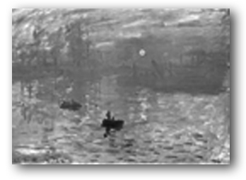

Yuting Ye
Ph.D.
Researcher
yutingye.public AT gmail.com
Researcher
yutingye.public AT gmail.com


Implementing Bridson's Fast Poisson Disk Sampling in PBRT
Mini-Project of CS7001
Georgia Institute of Technology, 2007
Report (html, pdf) Source (cpp, 16k) More reuslts (zip, 12M)
Mini-Project of CS7001
Georgia Institute of Technology, 2007
Report (html, pdf) Source (cpp, 16k) More reuslts (zip, 12M)

A Momentum-based Bipedal Balance Controller
Master's project
University of Virginia, 2006
Presentation (ppt, 1.09M) Video (zip, 3.4M)
Master's project
University of Virginia, 2006
Presentation (ppt, 1.09M) Video (zip, 3.4M)

Color to Grayscale Conversion with Chrominance Contrast
Image processing project
University of Virginia, 2006
Paper (pdf) Presentation (ppt) Code (matlab) Data (zip, 876k)
Image processing project
University of Virginia, 2006
Paper (pdf) Presentation (ppt) Code (matlab) Data (zip, 876k)

Computer Animation Projects
University of Virginia, 2005
Particles, rigid body, inverse kinematics, motion capture, PD controllers
Projects
University of Virginia, 2005
Particles, rigid body, inverse kinematics, motion capture, PD controllers
Projects

Intro Graphics Projects
University of Virginia, 2004
Image processing, raytracer, Rubik's cube, NPR
Projects (with source code)
University of Virginia, 2004
Image processing, raytracer, Rubik's cube, NPR
Projects (with source code)

An Interactive 2D Vector Graphics Editing System
Undergraduate thesis
Peking University, 2004
Source code (rar, VC6.0 project, 576K)
Undergraduate thesis
Peking University, 2004
Source code (rar, VC6.0 project, 576K)

View-dependent Real-time Terrain Rendering Using Static LOD
with Guoping Wang
Accepted to Intl CAD'04 Presentation
Paper (pdf) Source code (rar, 3.1M)
with Guoping Wang
Accepted to Intl CAD'04 Presentation
Paper (pdf) Source code (rar, 3.1M)